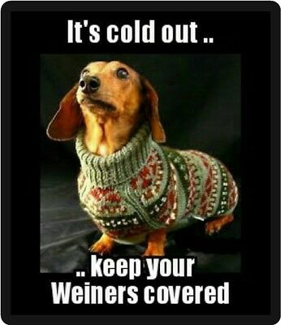
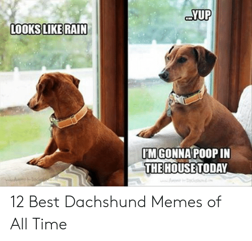

Are dachsunds the most easily meme'd breed of dog?
- They're planking all day!
 Here to steal your girl
Here to steal your girl-  They hate cold weather
-  If it's raining, they ain't leaving
The dachshund originated in Germany as a hunting dog. Though its origins can be traced as far back as the 15th century, the breed's development really began in 17th century Germany. Called dachshunds, which translates as "badger dogs," these short hounds did just that—they hunted badgers. Their stature, determination, and independence were ideal for digging, entering tunnels, and of course, fighting badgers. Their flap-down ears help keep dirt and debris out when burrowing.
Further development of the breed created two sizes. Historically, the standard size continued to hunt badgers as well as wild boar, while the miniatures pursued hare and foxes. There's also a middle-size dachshund in Germany.
Dachshunds were brought to the U.S. as early as 1885 when the breed was recognized by the American Kennel Club (AKC) but increased in popularity in the 1930s and 1940s. To prevent them from being ostracized during World War II, they were temporarily called badger dogs in the U.S. They remain extremely popular dogs to this day.
Dachshund races, known as "wiener races," are popular in some places for amusement. However, these are opposed by the Dachshund Club of America out of concerns over whether racing might injure the dogs.
Click here to check out the world championship 100m dachshund dash final Here to steal your girl A cheeky tee
A cheeky tee